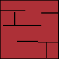
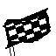
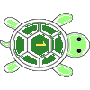

Explore a maze
The maze challenge
Guide the turtle from E10 (X=4, Y=9), facing up, to the goal flag at I8 (X=8, Y=7). Walls block movement; the edge of the board also counts as blocked. This is the complexMaze2 board used by the original maze example.




Follow the left-hand rule
- If the path on the left is open, turn left.
- Otherwise, if the path ahead is blocked, turn right.
- After choosing a direction, move one square only if the path ahead is open.
- Check for the goal after each turn of the loop. Stop at the flag; otherwise repeat.
At a dead end, one right turn may still leave a wall ahead. The turtle stays put and tries again on the next loop. This left-hand rule can take detours: it does not search for the shortest route, and it is not guaranteed to solve every possible maze.
Try the step-through debugger ↓
TLAC instruction cards
Read the numbered cards, then try Next below. Function definitions describe reusable instructions: their bodies run only when called. The loop runs its body before checking its stop condition: no means continue, yes means stop.
0001
Define function: Check whether the goal is still ahead · Run these cards only when called.
0002
Return to the caller with result: not (the turtle is on the goal flag)
0003
Define function: Check the path ahead · Run these cards only when called.
0004
Return to the caller with result: the square ahead is inside the board and has no wall
0005
Define function: Check the path on the left · Run these cards only when called.
0006
Turn left
0007
Set result to Call “Check the path ahead”
0008
Turn right
0009
Return to the caller with result: result
0010
Define function: Turn left · Run these cards only when called.
0011
Turn left
0012
Define function: Turn right · Run these cards only when called.
0013
Turn right
0014
Define function: Move forward · Run these cards only when called.
0015
Move forward one square
0016
Define function: One turn of the maze loop · Inputs: current · Run these cards only when called.
0017
If Call “Check the path on the left”, then
0018
Call “Turn left”
0019
If not (Call “Check the path ahead”), then
0020
Call “Turn right”
0021
If Call “Check the path ahead”, then
0022
Call “Move forward”
0023
Define function: Check whether to stop the loop · Inputs: current, unused · Run these cards only when called.
0024
If Call “Check whether the goal is still ahead”, then
0025
Return to the caller with result: no
0026
Otherwise
0027
Return to the caller with result: yes
0028
Use “One turn of the maze loop” as the repeated action
0029
Use “Check whether to stop the loop” as the stop check
0030
Run one turn, then check whether to stop; repeat until the stop check says yes
El reto del laberinto
Guía a la tortuga desde E10 (X=4, Y=9), mirando arriba, hasta la bandera en I8 (X=8, Y=7). Los muros y los bordes del tablero impiden avanzar. Este es el tablero complexMaze2 del ejemplo original.
Sigue la regla de la mano izquierda
- Si el camino a la izquierda está libre, gira a la izquierda.
- Si no, y el camino al frente está bloqueado, gira a la derecha.
- Después de elegir la dirección, avanza una casilla solo si el camino al frente está libre.
- Comprueba la meta después de cada vuelta del bucle. Detente en la bandera; si no, repite.
En un callejón sin salida, un giro a la derecha puede dejar otro muro enfrente. La tortuga espera y vuelve a intentarlo en la siguiente vuelta. La regla de la mano izquierda puede dar rodeos: no busca la ruta más corta ni garantiza resolver cualquier laberinto.
Prueba el depurador paso a paso ↓
Tarjetas de instrucciones TLAC
Lee las tarjetas numeradas y prueba Siguiente abajo. Las definiciones de funciones describen instrucciones reutilizables: solo se ejecutan al llamarlas. El bucle ejecuta su cuerpo antes de comprobar la condición de parada: no significa continuar y sí significa terminar.
0001
Definir función: Comprobar si falta llegar a la meta · Ejecutar estas tarjetas solo al llamar a la función.
0002
Volver a quien llamó a la función con el resultado: no (la tortuga está sobre la bandera de meta)
0003
Definir función: Comprobar el camino al frente · Ejecutar estas tarjetas solo al llamar a la función.
0004
Volver a quien llamó a la función con el resultado: la casilla de enfrente está dentro del tablero y no tiene muro
0005
Definir función: Comprobar el camino a la izquierda · Ejecutar estas tarjetas solo al llamar a la función.
0006
Girar a la izquierda
0007
Poner result en Llamar a «Comprobar el camino al frente»
0008
Girar a la derecha
0009
Volver a quien llamó a la función con el resultado: result
0010
Definir función: Girar a la izquierda · Ejecutar estas tarjetas solo al llamar a la función.
0011
Girar a la izquierda
0012
Definir función: Girar a la derecha · Ejecutar estas tarjetas solo al llamar a la función.
0013
Girar a la derecha
0014
Definir función: Avanzar · Ejecutar estas tarjetas solo al llamar a la función.
0015
Avanzar una casilla
0016
Definir función: Una vuelta del bucle del laberinto · Entradas: current · Ejecutar estas tarjetas solo al llamar a la función.
0017
Si Llamar a «Comprobar el camino a la izquierda», entonces
0018
Llamar a «Girar a la izquierda»
0019
Si no (Llamar a «Comprobar el camino al frente»), entonces
0020
Llamar a «Girar a la derecha»
0021
Si Llamar a «Comprobar el camino al frente», entonces
0022
Llamar a «Avanzar»
0023
Definir función: Comprobar si hay que terminar el bucle · Entradas: current, unused · Ejecutar estas tarjetas solo al llamar a la función.
0024
Si Llamar a «Comprobar si falta llegar a la meta», entonces
0025
Volver a quien llamó a la función con el resultado: no
0026
En caso contrario
0027
Volver a quien llamó a la función con el resultado: sí
0028
Usar «Una vuelta del bucle del laberinto» como acción repetida
0029
Usar «Comprobar si hay que terminar el bucle» como comprobación de parada
0030
Ejecutar una vuelta y comprobar si hay que parar; repetir hasta que la comprobación diga sí
迷路に挑戦
上を向いたE10（X=4、Y=9）の亀を、I8（X=8、Y=7）のゴールの旗まで導きましょう。壁と盤面の端は通れません。元の迷路の例で使われているcomplexMaze2の盤面です。
左手法で進む
- 左に道があれば、左に回る。
- そうでなければ、前が通れないときに右に回る。
- 向きを決めたら、前に道がある場合だけ1マス進む。
- 繰り返し1回の最後にゴールを確認する。旗に着いたら終了し、まだなら繰り返す。
行き止まりでは、右に1回回っても前が壁の場合があります。その場で次の繰り返しに進み、もう一度調べます。この左手法は遠回りすることがあり、最短経路を探す方法ではありません。すべての迷路でゴールに着けるとは限りません。
TLAC命令カード
番号付きカードを読み、下の「次へ」を試してください。関数の中の命令は呼び出されたときに実行されます。この繰り返しは動作を実行してから終了条件を調べます。「いいえ」なら続け、「はい」なら終了します。
0001
関数を定義する：まだゴールに着いていないか調べる · 呼び出されたときにだけ中のカードを実行します。
0002
呼び出し元に戻る（結果：（亀がゴールの旗の上にいる）ではない）
0003
関数を定義する：前の道を調べる · 呼び出されたときにだけ中のカードを実行します。
0004
呼び出し元に戻る（結果：前のマスが盤面内にあり、壁がない）
0005
関数を定義する：左の道を調べる · 呼び出されたときにだけ中のカードを実行します。
0006
左に回る
0007
resultを「前の道を調べる」を呼び出すにする
0008
右に回る
0009
呼び出し元に戻る（結果：result）
0010
関数を定義する：左に回る · 呼び出されたときにだけ中のカードを実行します。
0011
左に回る
0012
関数を定義する：右に回る · 呼び出されたときにだけ中のカードを実行します。
0013
右に回る
0014
関数を定義する：前に進む · 呼び出されたときにだけ中のカードを実行します。
0015
前に1マス進む
0016
関数を定義する：迷路の繰り返し1回分 · 入力：current · 呼び出されたときにだけ中のカードを実行します。
0017
もし「左の道を調べる」を呼び出すなら
0018
「左に回る」を呼び出す
0019
もし（「前の道を調べる」を呼び出す）ではないなら
0020
「右に回る」を呼び出す
0021
もし「前の道を調べる」を呼び出すなら
0022
「前に進む」を呼び出す
0023
関数を定義する：繰り返しを終えるか調べる · 入力：current, unused · 呼び出されたときにだけ中のカードを実行します。
0024
もし「まだゴールに着いていないか調べる」を呼び出すなら
0025
呼び出し元に戻る（結果：いいえ）
0026
そうでなければ
0027
呼び出し元に戻る（結果：はい）
0028
「迷路の繰り返し1回分」を繰り返す動作にする
0029
「繰り返しを終えるか調べる」を終了条件にする
0030
1回実行してから終了するか調べる。「はい」になるまで繰り返す